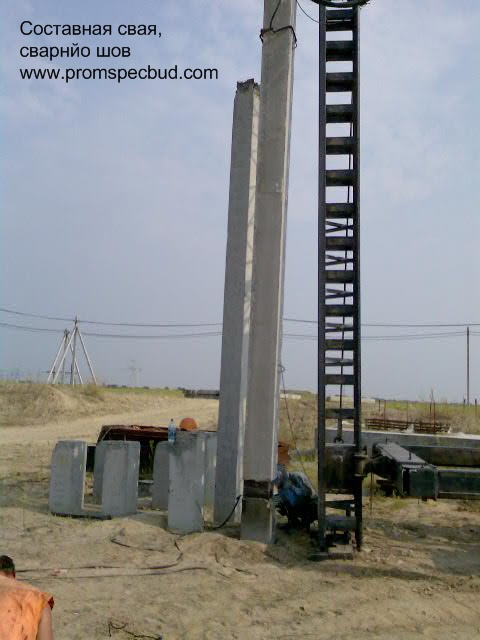

Наш арсенал сучасної імпортної та модернізованої вітчизняної техніки забезпечує автономність, високу продуктивність та безперебійну роботу на майданчиках будь-якої складності.
ТОВ «Промспецбуд» м. Кременчук має ексклюзивний дилерський договір із провідним південнокорейським виробником гідромолотів TM “BRUCE” (Powerquip).
Застосування сучасних гідромолотів замість застарілих трубчастих дизельних молотів збільшує темп робіт у 5 разів. Гідромолот передає керований імпульс без руйнівних пікових навантажень на палю, що дозволяє занурювати її у найщільніші ґрунти.
| Модель гідромолота | Вага ударної частини, кг | Енергія удару, кДж | Частота ударів, уд/хв | Застосування |
|---|---|---|---|---|
| BRUCE SGH-0312 | 3 000 | 36 | 40 – 100 | Палі 300х300 мм до 12 м |
| BRUCE SGH-0512 | 5 000 | 60 | 35 – 90 | Палі 350х350, 400х400 мм до 16 м |
| Junttan HHK-5A | 5 000 | 59 | 40 – 100 | Швидкісне забивання на елеваторах |
| Junttan HHK-7A | 7 000 | 83 | 30 – 80 | Важкі складені палі до 24 м |

Базова машина на гусеничному ходу Т-170. Може оснащуватися гідромолотом, дизель-молотом або буровою лідерною головкою СО-2.
| Довжина палі: | до 12 метрів |
| Маса палі: | до 5.0 тонн |
| Лідерне буріння: | шнек 200–350 мм |

Універсальний агрегат для швидкого забивання паль на підготовлених майданчиках, а також лідерного розбурювання свердловин.
| Довжина палі: | до 8–10 метрів |
| Оснащення: | молот СП-75 / СО-2 |
| Мобільність: | гусеничний хід |

Тяжкі повноповоротні канатні копри з високою стрілою, призначені для занурення довгих та складених паль до 16-20 метрів.
| Довжина палі: | до 16 метрів |
| Оснащення: | гідромолот / молот СП-76 |
| Радіус дії: | повноповоротна платформа |
Для виконання робіт на майданчиках, де відсутня електроенергія та інфраструктура, ми використовуємо власну спецтехніку та житлові комплекси:
Власні автокрани вантажопідйомністю 16, 20 та 25 тонн (КрАЗ, МАЗ) для розвантаження та подачі паль під копри.
Тяжкі бульдозери Т-170, планувальники та екскаватори для земляних робіт і підтягування паль по будівельному полю.
Автономні пересувні генератори потужністю від 30 до 150 кВт для живлення бетононасосів, зварювальних постів та освітлення.
Утеплені житлові вагончики, інструментальні майстерні та штабні контейнери для цілодобового проживання бригад.
У зв'язку з оновленням та оптимізацією матеріально-технічної бази підприємство «Промспецбуд» пропонує до продажу за вигідними цінами:
З питань придбання звертайтеся безпосередньо до директора Кузіка Віктора Федоровича: +38 (067) 535-02-29 або на e-mail: promspecbud5@gmail.com.
Зв'язатися щодо продажу